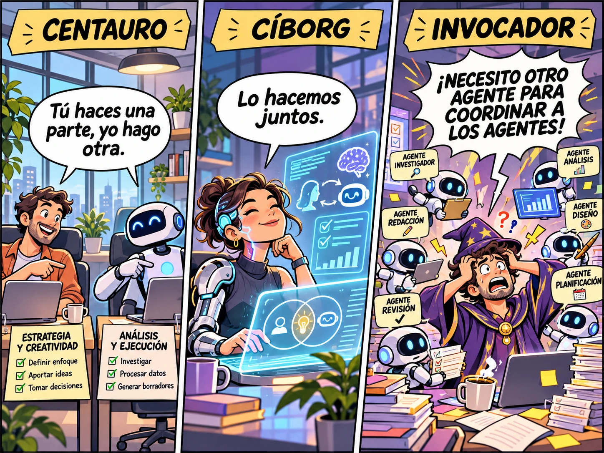

estrategIA #163 ·
Otro agente para coordinar a los agentes
El contexto
El número repasaba tres formas de trabajar con IA descritas por Ethan Mollick: el centauro reparte tareas entre persona y máquina, el cíborg las entrelaza y el invocador delega trabajos en agentes. La viñeta lleva esta última forma al absurdo: dirigir tantos agentes acaba exigiendo otro que los coordine. La escena satiriza la sobrecarga que puede acompañar al aumento de productividad.
Publicado en: estrategIA #163 — De la co-inteligencia a la co-existencia: las nuevas lecciones de Ethan Mollick sobre la IA
Leer el texto de la imagen
CENTAURO Tú haces una parte, yo hago otra. ESTRATEGIA Y CREATIVIDAD Definir enfoque Aportar ideas Tomar decisiones ANÁLISIS Y EJECUCIÓN Investigar Procesar datos Generar borradores CÍBORG Lo hacemos juntos. INVOCADOR ¡NECESITO OTRO AGENTE PARA COORDINAR A LOS AGENTES! AGENTE INVESTIGADOR AGENTE ANÁLISIS AGENTE REDACCIÓN AGENTE DISEÑO AGENTE REVISIÓN AGENTE PLANIFICACIÓN